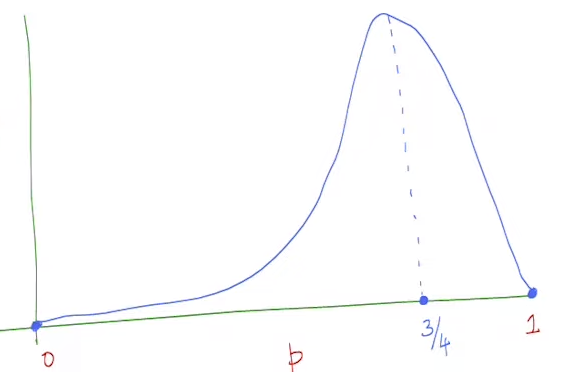

Estimation
There is some probabilistic mechanism that generates the data about which we dont know all the parameters.
The goal of estimation is to find the parameters we dont know about.
Maximal Likelihood Estimation (ML)
Is there a principaled way to get estimators from data?
The way one can do this is by using the likelihood function.
Lets say \(x \in \{1,0,1,1\}\) , the \(P(X_1 =1 , X_2 = 0 , X_3 = 1 , X_4 = 1)\) will be

If we were to guess the probability that \(X\) takes a certain value , \(\frac{3}{4}\) would be what most people agree on , this guess is also justified with the plot above but how do we actually end up with this guess? , is there a certain mathematical way/formula to get here?
Fisher's Principle of ML
From the above likelihood function we can see that the following function is to be maximized
We can now see where our guess previously originates from